Wild plants you can forage in New Zealand
58 wild greens, berries, nuts, roots and flowers, with when each is in season, where it grows, how to harvest it and what to cook.
Greens
 ChickweedApr–Nov
ChickweedApr–Nov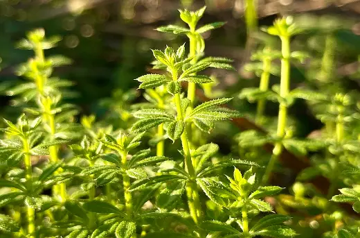
CleaversAug–Nov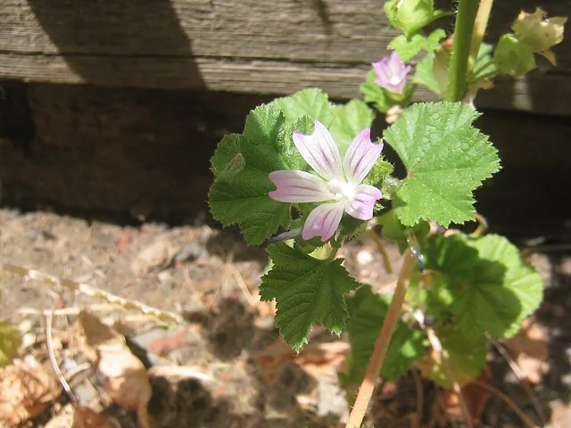
Common mallowSep–Apr DandelionAug–Apr
DandelionAug–Apr Fat henNov–Mar
Fat henNov–Mar KarengoJul–Nov
KarengoJul–Nov KōkihiOct–Apr
KōkihiOct–Apr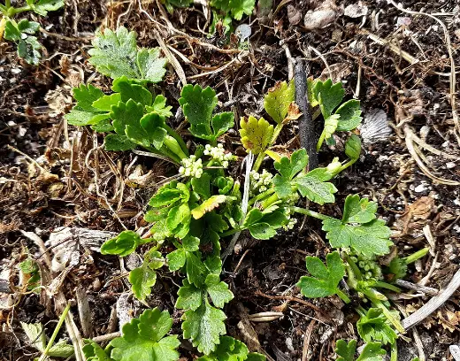
Native celeryAll year PikopikoAug–Nov
PikopikoAug–Nov PūhāAll year
PūhāAll year Ribwort plantainSep–Apr
Ribwort plantainSep–Apr Rimurapa · Bull kelpAll year
Rimurapa · Bull kelpAll year Sea lettuceSep–Apr
Sea lettuceSep–Apr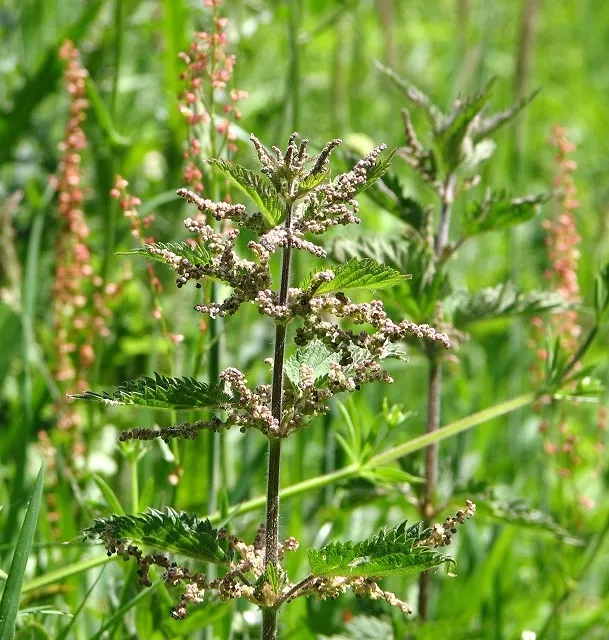
Stinging nettleAug–Nov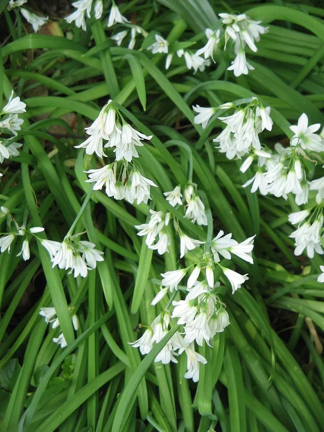
Three-cornered leekJun–Oct WatercressAug–Dec
WatercressAug–Dec Wild fennelSep–Feb
Wild fennelSep–Feb
Fruit & berries
 BlackberryJan–Mar
BlackberryJan–Mar Cherry guavaFeb–May
Cherry guavaFeb–May Cherry plumDec–Feb
Cherry plumDec–Feb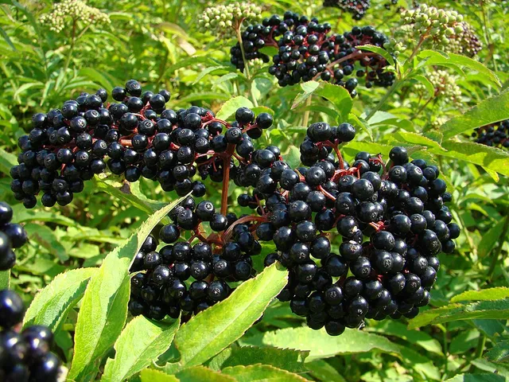
ElderberryFeb–Mar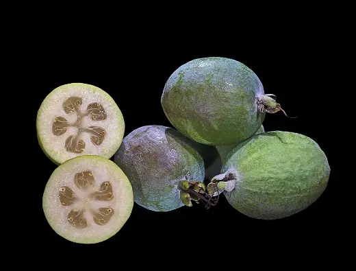
FeijoaMar–Jun HawthornMar–May
HawthornMar–May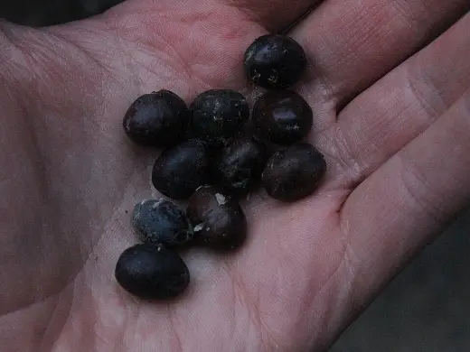
HīnauFeb–May Kahikatea berriesMar–May
Kahikatea berriesMar–May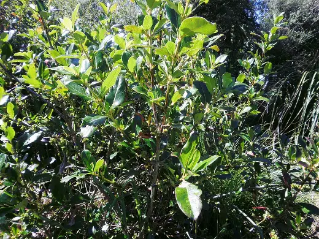
Karamū berriesMar–May Kiekie fruitFeb–Apr
Kiekie fruitFeb–Apr KōniniDec–Mar
KōniniDec–Mar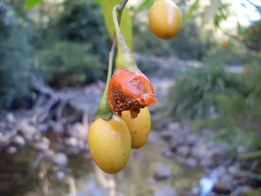
PoroporoDec–Apr Rose hipsMar–May
Rose hipsMar–May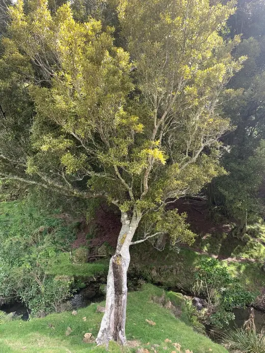
Tawa berriesFeb–Apr Wild plumsDec–Feb
Wild plumsDec–Feb
Roots & shoots
Sap & starch
 RaupōNov–Jan
RaupōNov–JanProtein
 Green-lipped musselsAll year
Green-lipped musselsAll year KinaJun–Oct
KinaJun–Oct OystersMar–Aug
OystersMar–Aug Pipi and tuatuaAll year
Pipi and tuatuaAll year PāuaAll year
PāuaAll year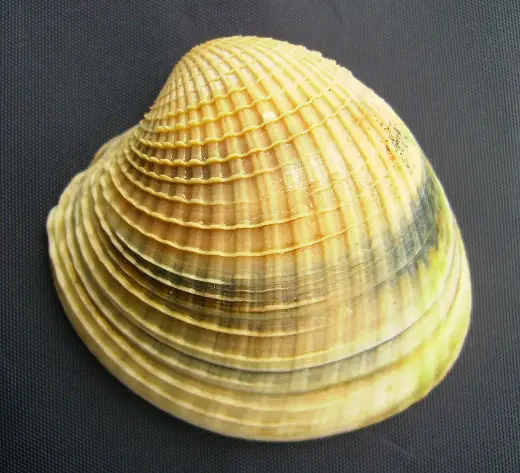
Tuangi cocklesAll year
Nuts
 HazelnutFeb–Apr
HazelnutFeb–AprFlowers & teas
 ElderflowerNov–Dec
ElderflowerNov–Dec Gorse flowersJul–Nov
Gorse flowersJul–Nov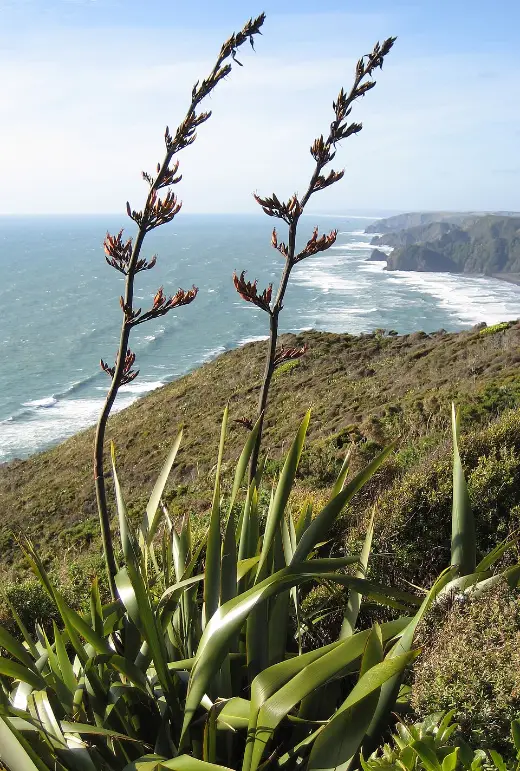
Harakeke nectarOct–Dec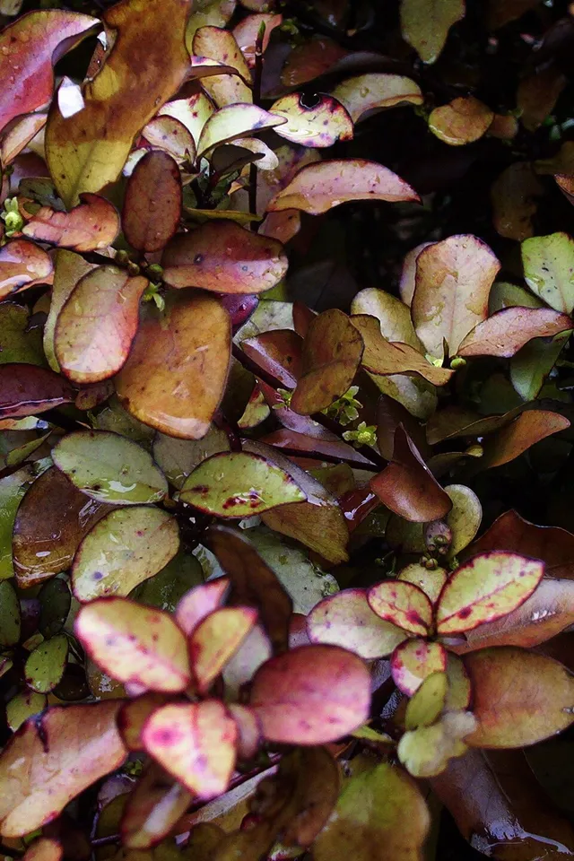
HoropitoAll year KawakawaAll year
KawakawaAll year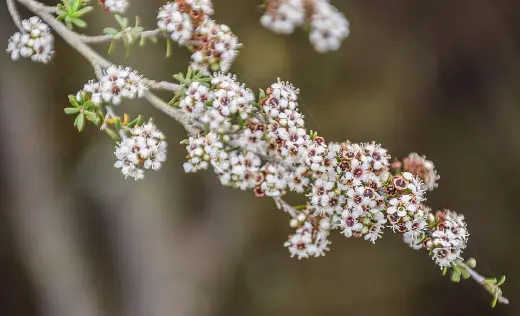
Kānuka teaAll year MānukaAll year
MānukaAll year NasturtiumAll year
NasturtiumAll year
 Field mushroomFeb–Apr
Field mushroomFeb–Apr PorciniMar–May
PorciniMar–May Slippery jackMar–Jun
Slippery jackMar–Jun